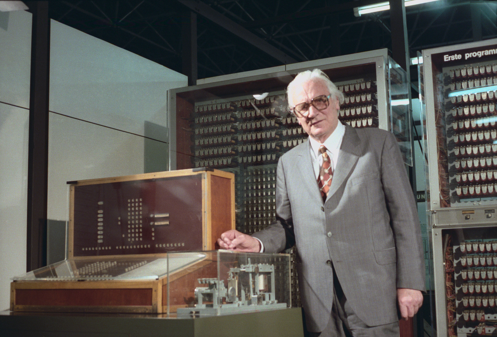

Эволюция ПК
Konrad Ernst Otto Zuse; 22 июня 1910, Берлин,
Германская империя — 18 декабря 1995, Хюнфельд,
Германия) — немецкий инженер, пионер компьютеростроения.
Наиболее известен как создатель первого действительно
работающего программируемого компьютера (1941) и
первого языка программирования высокого уровня (1948).

Эволюция компьютера